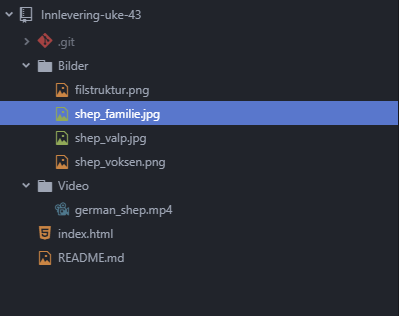
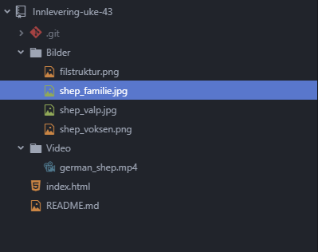

Internett er et nettverk av nettverk. For at de forskjellige datamaskinene skal kunne bli koblet sammen må de bruke de samme «spille reglene» disse reglene kalles protokoller. Uten disse reglene kan ikke maskinene forstå hverandre.
For å få et internett så må vi ha flere nettverk. Definasjonen på et nettverk er minimum 2 maskiner som er kobblet sammen. Når vi så kobler flere slike nettverk sammen, vil vi få internett.
I internettet finnes det forskjellige typer brukere. Det fins klienter som er de som bruker nettet. Også har du tjenere. Det er de som har informasjonen til nettsidene du ønsker å besøke. Vi har også noe som heter dns tjenere. Disse tjenerne lagrer informasjonen om hvordan man skal kobble seg til de andre tjenerene når vi skal for eksempel gå på facebook. De tar imot informasjonen du sender inn «facebook.com» også sender den tilbake ip addressen til denne serveren. Slik at du kan koble deg til denne serveren. Den har også litt informasjon om hva slags kode språk nettsiden bruker.
I tillegg har vi noe som heter TCP. Dette er en protokoll som sier hvordan informasjonen mellom klienter og tjenere skal bli håndtert og sendt. For når klienter og tjenere snakker sammen blir det sendt pakker mellom dem. Er det snakk om mye informasjon vil pakkene som regel bli delt opp i flere mindre pakker. Da må alle pakkene inneholde informasjonen om hvordan de skal bli satt sammen igjen når de kommer tilbake til klienten. Slik at klienten kan få opp nettsiden og dens innhold på riktig måte.
Top 3 farger
Noen fag jeg liker
| Navn | Type | Terningkast |
|---|---|---|
| The Hunger Games | Action/Sci-Fi | 5 |
| The Maze Runner | Action/Sci-Fi | 6 |
| Avatar | Action/Sci-Fi | 6 |
Noen bilder av Schæfere


 

Morsomme klipps av Schæfere